El Príncipe dedicó su segundo día de estancia oficial en Aragón a la provincia de Teruel , en donde conoció las vías abiertas por sus habitantes para superar el desequilibrio económico y social que sufre la provincia.
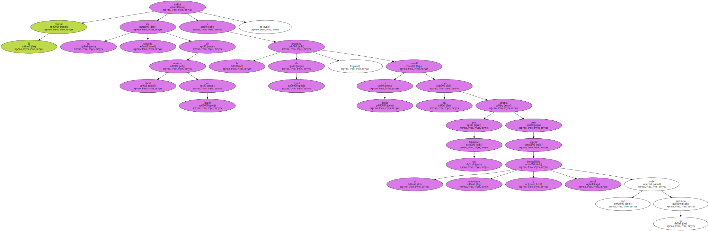Los problemas que genera el envejecimiento progresivo de su población , el aislamiento en que viven muchos de sus municipios y su despoblación , o los problemas en las comunicaciones , fueron temas que desfilaron por las tres mesas de trabajo que presidió hoy Don Felipe , acompañado por el presidente de la Comunidad , Marcelino Iglesias.
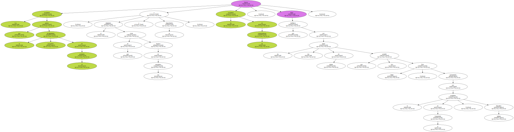" Nadie debe concebir otra posibilidad , para Aragón y para España , que no sea la de una Teruel dinámica y pujante " , afirmó hoy en el ayuntamiento de la capital turolense dentro del mensaje de ánimo que dirigió a los habitantes de esta provincia.
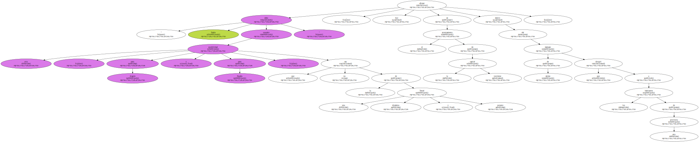El programa de trabajo de Don Felipe le llevó hoy a las poblaciones de Alcañiz , Molinos , Albarracín y Teruel capital.
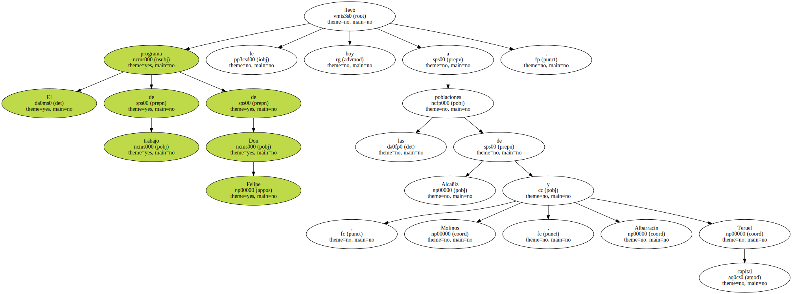En todos estos lugares Don Felipe comprobó en la calle el afecto con que es recibido en esta tierra , en tanto que en los despachos conoció los proyectos con los que los turolenses preparan su futuro.
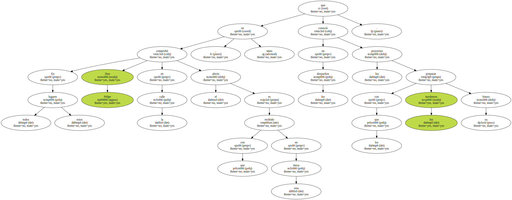En Alcañiz , donde inició su jornada , el Príncipe de Gerona , título con el que los aragoneses gustan llamar a Don Felipe , se sumergió en el mar de datos que genera la industria agrícola y ganadera.
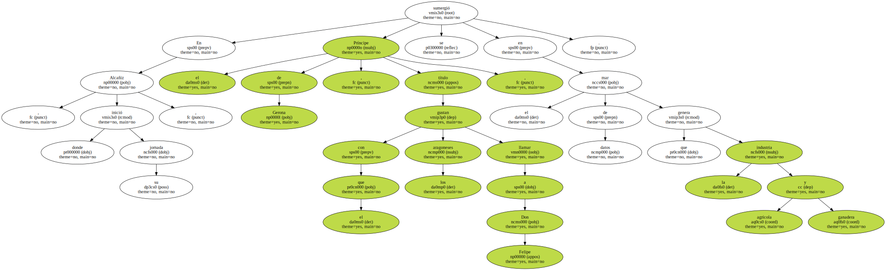Con representantes de todos los sectores relacionados con esta fuente de riqueza , Don Felipe conversó acerca de la escasez de mano de obra , de la necesidad de favorecer la regulación de los inmigrantes , y de los problemas que genera la despoblación.

La población de la provincia de Teruel , como no se cansan de repetir sus ciudadanos , podría caber casi completa en el Camp Nou , ya que ronda los 120.000 habitantes , es decir , la mitad que hace un siglo.
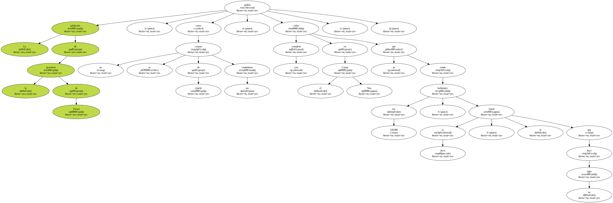Los empresarios turolenses de las industrias cárnicas , ahora en auge , expresaron ante el Príncipe su intención de dirigir sus negocios a protagonizar no sólo la producción , sino también la transformación , y la orientación que han tomado hacia los productos de calidad , como en el caso del jamón de Teruel , o los aceites.
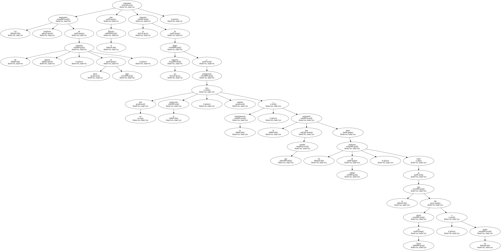A bordo de un helicóptero , para ganar tiempo en las distancias que separan a los pueblos , Don Felipe viajó más tarde a la pequeña localidad de Molinos , en donde su entusiasta alcalde , Mateo Andrés , está empeñado en incorporar al municipio a lo más avanzado de la sociedad de la información.
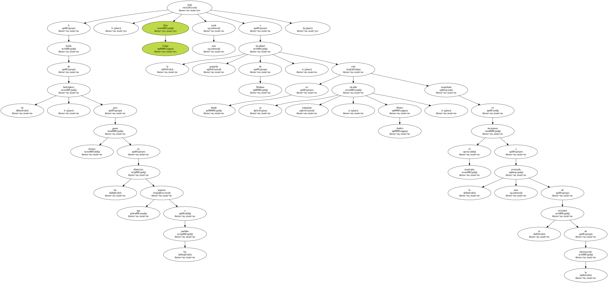Andrés , junto a sus colegas de otros 42 municipios del Maestrazgo , conecta su pueblo a través de videoconferencias con otros con similares problemas de despoblación o envejecimiento , o con Bruselas , y por medio de la Red , elabora diarios telemáticos.
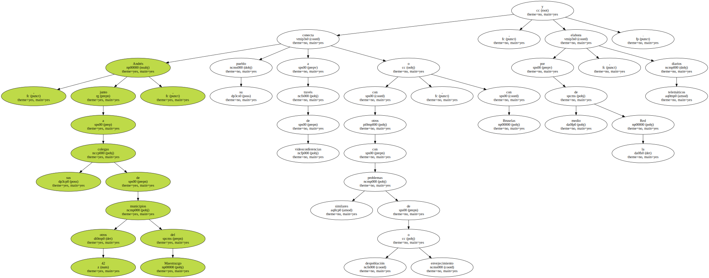El alcalde de este pueblo de 350 habitantes resumió las soluciones informáticas que explicó al Príncipe en una frase : " cualquier municipio , por pequeño que sea , puede ser el centro de mundo ".
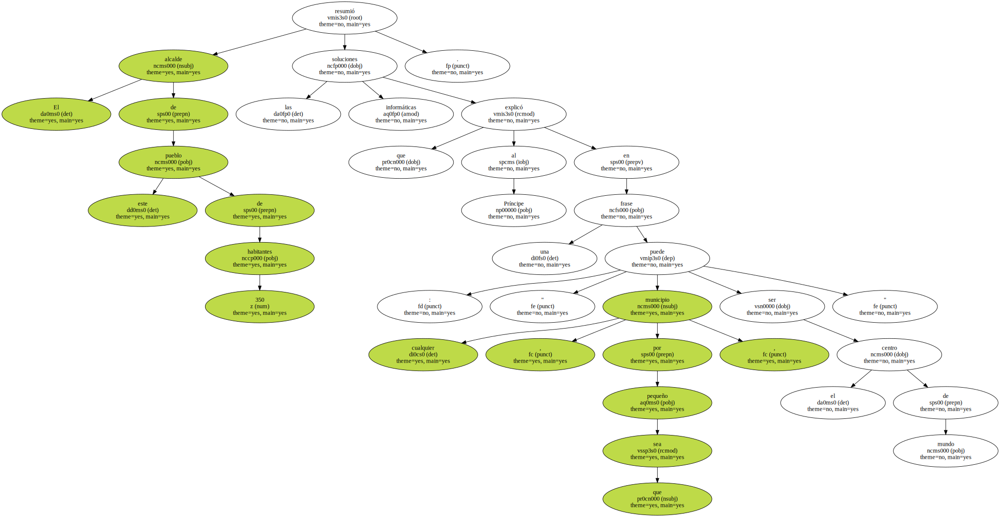En Albarracín , Don Felipe fue testigo de la forma en que trabajan las escuelas taller , creadas para recuperar un patrimonio artístico y cultural que ha de atraer el turismo de calidad que quiere la zona.
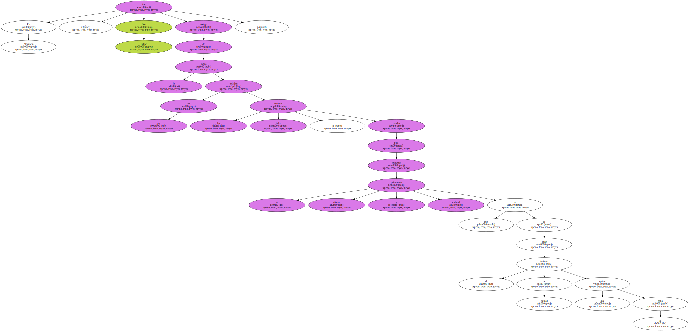En Teruel , por último , Don Felipe conoció de la corporación municipal las necesidades que , sobre todo en el capitulo de las infraestructuras , tiene la ciudad para poder acoger el turismo cultural al que dirige su actividad.
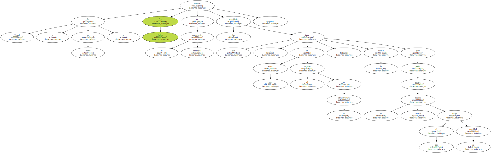Aquí , en el salón de reuniones del Ayuntamiento , Don Felipe vio como los concejales de los cinco partidos que integran la corporación coincidían en lamentar que esta sea la única ciudad de la España peninsular que no tiene conexión ferroviaria con Madrid , y que Teruel sea la única provincia que no tiene en su territorio ni un solo kilómetro de autovía.
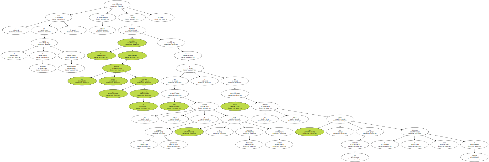Don Felipe visitó a continuación la catedral de la ciudad , considerada como la capilla Sixtina del arte mudéjar , y paseó por el centro correspondiendo con sus saludos al entusiasmo popular que llevó a las calles a , prácticamente , los 30.000 habitantes de Teruel.
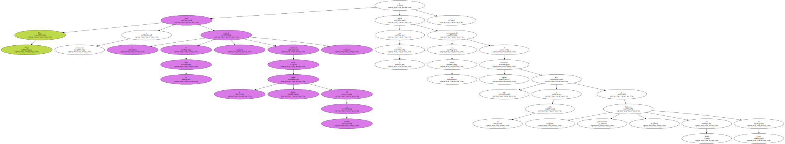Don Felipe pernoctará hoy en esta ciudad.
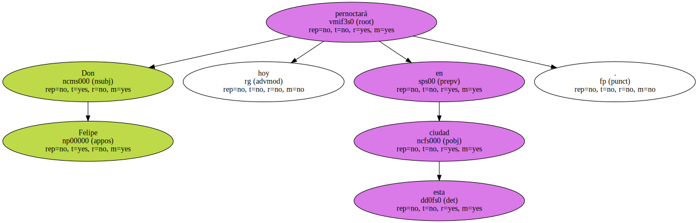Una señora que había acudido a vitorearlo , al saber que el Príncipe dormía en la ciudad se mostraba incrédula por considerar que ese detalle " es mucho para Teruel ".
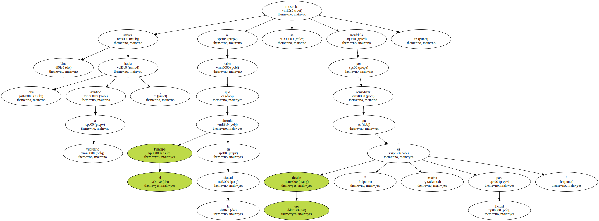